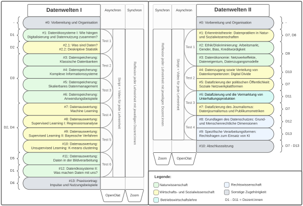

Datenwelten: interdisziplinäre hochschulweite Ringvorlesungen zum Erwerb von Data Literacy
Toolbeschreibung
Im Projekt Digital and Data Literacy in Teaching Lab (kurz: DDLitLab) wird das Ziel verfolgt, Data-Literacy-Basiskompetenzen umfassend und großflächig an Studierende aller Fakultäten der Universität Hamburg unabhängig vom Studienfach zu vermitteln. Das Fundament bilden zwei aufeinander bezogene interdisziplinäre Ringvorlesungen (für einen weiteren Anwendungsfall von Ringvorlesungen vgl. Hütig in diesem Band). Unter der thematischen Klammer „Datenwelten“ führt die erste Ringvorlesung jeweils im Wintersemester in die informationstechnischen Grundlagen der Generierung, Speicherung und Auswertung von Daten ein und gibt erste Einblicke in das Thema Machine Learning. Die zweite Ringvorlesung befasst sich im Sommersemester in einer kritischen Perspektive mit der Reflexion von „Datenwelten“ in Gesellschaft, Wirtschaft, Politik, Medien, Philosophie und Recht. Besonderheit der Vorlesungsreihe ist, dass die Dozierenden aus den Bereichen Informatik, Sozial-, Rechts- und Wirtschaftswissenschaften ihre Inhalte stark miteinander verschränken und aufeinander beziehen. So wird in der Veranstaltung dem Umstand Rechnung getragen, dass Data Literacy ein Querschnittsthema ist, das alle Disziplinen betrifft und zu dem auch alle etwas beizutragen haben. Dies geschieht nicht nur aufseiten der Lehrenden, denn die Vorlesungsreihe richtet sich an Studierende aus allen Fakultäten und bietet durch ihr Konzept vielfältige Möglichkeiten zum Austausch fachübergreifender Perspektiven.
Voraussetzungen & Zielgruppen
Die Datenwelten-Ringvorlesungen werden fachübergreifend im Rahmen des freien Wahlbereichs1 angeboten. Die Zielgruppe umfasst Studierende aller Bachelor-, Master- und Examensstudiengänge der Universität Hamburg. Zudem ist die zweisemestrige Vorlesungsreihe für Studierende im Gaststudium und Kontaktstudierende (Seniorenstudium) geöffnet. Ziel ist es, Data-Literacy-Basiskompetenzen zu vermitteln, fachliche Vorkenntnisse sind deshalb nicht erforderlich. Die beiden Vorlesungen Datenwelten I und II sind als Einheit aufeinander bezogen, können aber auch unabhängig voneinander besucht werden.
Kompetenzen
Ganz im Sinne des Literacy-Begriffs zielen die interdisziplinären Ringvorlesungen darauf ab, Basiskompetenzen zur Orientierung in der von Daten geprägten digitalen Welt zu vermitteln. Diese lassen sich in vier Bereiche einteilen: 1) Datenwelten, -kulturen und -systeme, 2) Datenerhebung, -bereitstellung und -speicherung, 3) Datenauswertung, -interpretation und -visualisierung sowie 4) Datenableitung, -anwendung und ihre Konsequenzen. Jeder dieser Bereiche wird wiederum von drei Ebenen durchzogen: dem Aufbau von Wissen über Daten und Datenpraktiken, den damit verbundenen Fähigkeiten und Fertigkeiten sowie deren kritischer Reflexion. Mit der Orientierung an diesen Kompetenzbereichen und -ebenen knüpfen die Vorlesungen an etablierte Referenz- und Kompetenzrahmen (vgl. Ridsdale et al., 2015; Schüller, 2020) an und adressieren darüber hinaus die universitätseigenen Anforderungen an eine Data Literacy Education.
Konkret wird im Rahmen von Datenwelten I ein Grundverständnis von Datenpraktiken sowie eine Vorstellung von der Funktionsweise alltagsnaher informationstechnischer Systeme vermittelt. Weiterhin ist es das Ziel, dass die Studierenden praktische Fähigkeiten für statistische Verfahren zur Datenanalyse sowie eine Vorstellung davon entwickeln, wie soziotechnische Systeme bei Gewinnung, Speicherung und Nutzung von Daten interagieren.
Im Rahmen von Datenwelten II treten die Studierenden in den aktuellen gesellschaftlichen Diskurs zur Nutzung und Anwendung von Daten in Wissenschaft, Politik und Wirtschaft ein. Sie werden dazu angeleitet, diese omnipräsente Nutzung kritisch unter Berücksichtigung ihrer gesellschaftlichen Folgen und ethischen Implikationen zu reflektieren und Möglichkeiten und Grenzen der rechtlichen Regulierung von Datennutzung zu verstehen und zu bewerten.
Lerninhalte & Methoden
In Datenwelten I wird sowohl der Datenbegriff aus Sicht der Informatik und der empirischen Wissenschaften definiert als auch in die Datenspeicherung in klassischen Datenbanken und komplexen Informationssystemen sowie in skalierbares Datenmanagement eingeführt. Als Auszug aus den Themen werden Methoden der Datenanalyse und -verarbeitung und des maschinellen Lernens etwa auf der Basis der Regressionsanalyse, des k-Means-Clusterings, von Decision Trees und Bayes-Algorithmen vermittelt. Eine Einführung in das Konzept Datenökosysteme eröffnet die Veranstaltung, motiviert die Vermittlung ihrer Inhalte durch einen Fokus auf die praktische Nutzung von Daten und Algorithmen und leitet am Ende zur zweiten Ringvorlesung über.
Datenwelten II eröffnet mit erkenntnistheoretischen Erörterungen. Dabei werden Datenpraktiken in den Natur- und Sozialwissenschaften verglichen, der Unterschied zwischen Kausalität und Korrelation geklärt sowie die End-of-Theory-Debatte aufgegriffen. Zudem werden die Themen Ethik und Diskriminierung durch Algorithmen an griffigen Beispielen illustriert, wie rassistischen Biases im Trainingsmaterial von Bilderkennungssoftware oder zweifelhaften Autocomplete-Vorschlägen für Suchanfragen. Auch Fragen der Datenökonomie sowie der ungleiche Zugang zu digitalen Technologien (Digital Divide) werden aufgegriffen. Die Datafizierung der politischen Öffentlichkeit und der Medien – im Informationsjournalismus sowie in der Unterhaltungsindustrie – wird ebenfalls diskutiert. Den Abschluss bilden rechtswissenschaftliche Fragen und das Thema Datenschutz.
Inhaltlich bilden Vorlesungsvideos und synchrone Frage- und Diskussionsrunden den Kern der Veranstaltung. Diese sind nach dem Prinzip des Flipped Classroom (vgl. Akçayır & Akçayır, 2018) miteinander verknüpft. Die Videos werden drei bis vier Tage vor der Synchronveranstaltung verfügbar gemacht und bleiben für den Rest des Semesters auf dem Lernmanagementsystem (OpenOlat) verfügbar. Die wöchentlichen synchronen Sitzungen über Zoom nutzen Quiz, um die Interaktion zu starten und das Lernverständnis der Studierenden zu ermitteln, außerdem dienen sie der Diskussion und Reflexion über die jeweiligen Inhalte der Lehreinheit. Semesterbegleitend findet nach je zwei Lehreinheiten ein unbenoteter asynchroner Onlinetest statt, der unterschiedliche Frageformate nutzt, etwa Single- und Multiple-Choice-Fragen, Zuordnungsfragen, Lückentext und andere. Alle Tests werden durch im System hinterlegte Antworten automatisiert ausgewertet. Bei Erreichen von mehr als 50 Prozent aller richtigen Antworten über alle Tests hinweg wird der Leistungsnachweis der jeweiligen Datenwelten-Veranstaltung erbracht. Bei erfolgreichem Abschluss werden für Datenwelten I und II jeweils 3 ECTS vergeben. Der Aufbau der Ringvorlesungen sowie die Struktur der beiden Veranstaltungen finden sich in Abbildung 1.

Erkenntnisse & Erfahrungen
Die erste Durchführung der Datenwelten-Ringvorlesungen startete mit dem informationstechnischen und Machine-Learning-orientierten Teil im Wintersemester 2021/22, im Sommersemester 2022 folgte der kritisch-reflexive Teil. Beide Veranstaltungen erreichten im ersten Jahrgang jeweils über 300 Studierende. Zu den Studiengängen mit der höchsten Beteiligung zählten Informatik, Politikwissenschaft, Betriebswirtschaftslehre und Volkswirtschaftslehre. Weitere Studierende kamen aus den Erziehungs-, Rechts- und Geisteswissenschaften. Zu knapp 72 Prozent waren die Studierenden in Bachelorprogrammen eingeschrieben und rund 40 Prozent waren weiblich2.
Der modulare Aufbau der digitalen Ringvorlesungen bietet Vorteile in Bezug auf Skalierbarkeit, Flexibilität und Aktualität. Die digitale Ausführung mit automatisch bewerteten Tests erfordert keine physischen Räumlichkeiten und ermöglicht die Teilnahme großer Studierendengruppen (vgl. Schnapp, 2020). Die Vermittlung von Data Literacy kann so für eine große Anzahl von Studierenden erfolgen. Der modulare Aufbau ermöglicht es zudem, einzelne Lehreinheiten zu aktualisieren, um sie auf dem neuesten Stand der Forschung und Technik zu halten, ohne jeweils die gesamte Veranstaltung neu aufbauen zu müssen. Aufwendig werden Anpassungen dann, wenn sie Implikationen für Folgethemen haben, also Änderungen in weiteren Sitzungen nach sich ziehen. Der Aufwand für die Änderungen beziehungsweise die Neugestaltung einzelner Sitzungen richtet sich nach dem Umfang der neu zu konzipierenden Inhalte. Neben den Inhalten der Videomodule werden auch die Onlinetests in jeder neuen Durchführungsrunde ergänzt oder umgestaltet. Der Aufwand hierfür ist sehr begrenzt, da die Grundfunktionsweise der Tests etabliert ist und nur neue Inhalte eingebunden werden müssen.
Entsprechend dem übergeordneten Ziel der großflächigen disziplinübergreifenden Vermittlung von Data-Literacy-Basiskompetenzen an Studierende der Universität Hamburg waren die Teilnehmendenzahlen und besonders die Diversität beteiligter Studiengänge erfreulich. Die engmaschigen Evaluationen3 durch die Studierenden zeigten, dass die Vielfalt der Themen und deren multiperspektivische Betrachtung positiv aufgenommen wurden. Außerdem wird in den Evaluationen betont, wie wichtig Praxisbeispiele sind, um zu veranschaulichen, wie Daten in der gesellschaftlichen und wirtschaftlichen Praxis tatsächlich verwendet werden und welche Probleme dabei auftreten. Beflügelt durch die positive Resonanz besteht der Wille, die interdisziplinären Ringvorlesungen beizubehalten und weiterzuentwickeln.
Die Konzeption, Koordination und Durchführung einer interdisziplinär verschränkten Ringvorlesungsreihe erfordert einen erhöhten Aufwand (vgl. Braßler, 2020). Beispielsweise muss eine gemeinsame inhaltliche Ebene gefunden, Begriffe müssen disziplinenübergreifend einheitlich definiert und Arbeitsabläufe festgelegt werden. Gerade zu Beginn wurde viel Zeit für Abstimmungsprozesse und Meetings der interdisziplinären Arbeitsgruppe benötigt. Auch der Abgleich der Vorlesungsinhalte zur Vermeidung von Dopplungen und zur Verschränkung der Themen erforderte viel Zeit und regelmäßige Reflexionstreffen. Da die Lehrenden aus unterschiedlichen Fakultäten stammen, müssen auf struktureller Ebene zudem bereits frühzeitig die jeweils geltenden fakultären Bestimmungen für die Anrechnung des Lehrdeputats geklärt werden.
Teil des Lehrteams ist eine wissenschaftliche Mitarbeiterin auf Postdoc-Niveau, die mit eigenen Sitzungen an der Vorlesung beteiligt ist und die gesamte Veranstaltung inhaltlich und organisatorisch begleitet. Eine wichtige Aufgabe dieser Stelle ist außerdem die strategische Weiterentwicklung der Ringvorlesungen. Zusätzliche Unterstützung kommt von einer studentischen Hilfskraft, die das Lernmanagementsystem betreut, die Tests technisch umsetzt und den Studierenden als erste Ansprechpartnerin zur Verfügung steht, um etwa bei Problemen mit der Lernplattform und den semesterbegleitenden Onlinetests zu helfen. So werden die Lehrenden von Aufgaben entlastet, die bei einem interdisziplinären Lehrprojekt oft auch jenseits der anerkannten und gratifizierten Tätigkeiten liegen. Standardisierte Prozesse und Kommunikationswege sollen den Aufwand für Rückfragen und Einzelberatung in Grenzen halten.
Obwohl bereits viele Studierende unterschiedlicher Studiengänge im ersten Durchlauf erreicht wurden, besteht weiterhin Potenzial, das Angebot inhaltlich auszuweiten und mehr Teilnehmende zu gewinnen. Hierzu soll zukünftig die Sichtbarkeit der Veranstaltung durch eine engere Zusammenarbeit mit Studienprogrammen und gezielte Werbemaßnahmen erhöht werden. Gleichzeitig besteht die Hoffnung auf feste Integration der Veranstaltung in die Curricula einzelner Studiengänge im Rahmen der erhöhten Aufmerksamkeit für die wachsende Relevanz der benannten Basiskompetenzen in den unterschiedlichsten fachlichen Kontexten.
Für die Zukunft ist geplant, die Ringvorlesungen um Übungen zu ergänzen, in welchen die Inhalte praktisch und „hands-on“ erlernt werden können. Diese Übungen werden sich auf die Anwendung von statistischen Verfahren und technischen Sprachen wie SQL, R und Python zur Datenverarbeitung und -analyse konzentrieren (zu R vgl. Niemann-Lenz & Reinhard in diesem Band). Die Übungen sollen dabei in einer automatisch bewertbaren Form (Autograding) gestaltet werden, um den Aufwand bei großen Studierendenzahlen auf einem handhabbaren Niveau zu halten und so die Skalierbarkeit der Ringvorlesung sicherzustellen. Zur Umsetzung ist geplant, JupyterLab einzusetzen, da diese Umgebung zahlreiche technische Sprachen unterstützt. Gleichzeitig bietet JupyterLab eine einfache Zugänglichkeit, da Studierende und Lehrende nur einen Internetzugang und einen Browser benötigen (vgl. Rhein, Bata & Schmitz in diesem Band). Darüber hinaus ist die Erweiterung und Aktualisierung der einzelnen Lehreinheiten ein kontinuierlicher Prozess für die beteiligten Lehrenden. Schließlich wird gegenwärtig erörtert, in welchem Modus die Ringvorlesungen zukünftig organisiert werden sollen. Dies geschieht vor dem Hintergrund der Beobachtung, dass die reine Digitalform in einer wieder stark auf Präsenz setzenden Universität vor allem bei der Motivierung der Studierenden an Grenzen stößt.
Die beschriebenen interdisziplinären Ringvorlesungen zu den Datenwelten decken Data-Literacy-Basiskompetenzen ab, wie sie von der kritisch mündigen Bevölkerung und insbesondere Personen mit Hochschulabschluss verlangt werden. Disziplinär verankerte Lehrveranstaltungen können weiterführend an diese Grundlagenveranstaltungen anknüpfen und auf ihnen aufbauen.
Hilfreiche Links
- Alle Informationen zum Projekt „Digital and Data Literacy in Teaching Lab“ (kurz: DDLitLab), aus dem die beschriebenen Ringvorlesungen hervorgingen: https://www.isa.uni-hamburg.de/ddlitlab.html.
- Das „Lehre-Navi“ als kuratierte Sammlung von digitalen und didaktischen Lehr-Lern-Materialien, welches im Rahmen des DDLitLab-Projektes entstanden ist: https://www.uni-hamburg.de/lehre-navi.
- Das „Data-Literacy-Repositorium“” als kuratierte Sammlung von Projekten, Materialien und Literatur zur Data Literacy Education, welches im Rahmen des DDLitLab-Projektes entstanden ist: https://www.isa.uni-hamburg.de/ddlitlab/fachspezifik/repositorium.html.
Autor:innenprofil
Stephan Leible studierte Wirtschaftsingenieurwesen mit Schwerpunkt Wirtschaftsinformatik sowie Management an der Hochschule Offenburg und ist heute als wissenschaftlicher Mitarbeiter im DDLitLab zur Förderung der Data Literacy Education an der Universität Hamburg tätig.
Moritz Kreinsen studierte Lehramt an Gymnasien mit den Fächern Informatik und Physik an der Universität Hamburg. Zurzeit arbeitet er als wissenschaftlicher Mitarbeiter in der Koordination der fachspezifischen Data Literacy Education im DDLitLab und promoviert in der Informatikdidaktik zum Thema AI Literacy und Data Literacy in der Lehrkräftebildung.
Carolin Scharfenberg studierte Soziologie an der Universität Hamburg und arbeitet aktuell als wissenschaftliche Mitarbeiterin in der Gesamtkoordination im DDLitLab zur Förderung der Data Literacy Education an der Universität Hamburg.
Dr. Julia Niemann-Lenz studierte Kommunikationswissenschaft in Hannover und promovierte zum Thema Privatsphäre auf sozialen Netzwerkplattformen an der Universität Hohenheim. Zurzeit arbeitet sie als Scientific Coordinator in der Data Literacy Education an der Universität Hamburg.
Prof. Dr. Kai-Uwe Schnapp studierte Politische Ökonomie, Politikwissenschaft und Public Administration an der Hochschule für Ökonomie in Berlin-Karlshorst, der Freien Universität Berlin und der University of Minnesota. Er ist Professor für Politikwissenschaft, insbesondere Methoden, und gegenwärtig Co-Sprecher des durch die Stiftung Innovation in der Hochschullehre geförderten Projektes DDLitLab an der Universität Hamburg.
Der freie Wahlbereich ermöglicht Studierenden der Universität Hamburg, eine in der jeweiligen Studienordnung festgehaltene Anzahl an Leistungspunkten durch die Teilnahme an Lehrveranstaltungen ihrer Wahl zu erbringen, die in der Regel nicht aus dem eigenen fachlichen Kontext kommen.↩︎
Geschlechter wurden anhand der Vornamen der Teilnehmer:innen eingestuft.↩︎
Bei jedem Wechsel der Dozierenden innerhalb der Vorlesungsreihe wird eine Zwischenevaluation durchgeführt. So kann personenbezogen Rückmeldung gegeben und die Lehrqualität spezifisch verbessert werden.↩︎